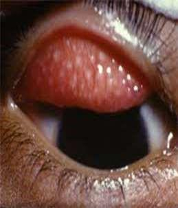

Conjunctiva · Trachoma — clinical picture
T1: Trachoma at onset
- Immature follicles present on the upper tarsal conjunctiva.
- Early corneal changes are usually present.
Clinically:
- Incubation period: 6-12 days.
- Symptoms
- Sandy or gritty sensation.
- Heaviness of the lids, conj.
- Mucus discharge sticking the lashes together and photophobia.
Signs:
- On eversion of the upper eyelid, small follicles on the upper tarsal conjunctiva.
- They appear as non-raised grayish small (up to 1 mm) spots which are separated by areas of vasodilatation. They are non-expressible (not ruptured with pressure).
- The cornea: shows in its upper part "Trachomatous Pannus": It is superficial vascularization and cellular infiltration of the upper part of the cornea.
Fate of the follicles:
- They may absorb spontaneously or remain for 2-4 months then change into large follicles.
